🧑🔬 People
The lab brings together PhD and MSc students working across machine learning, data science, and interdisciplinary applications—from theory to real-world impact.
We are a dynamic and growing group, always looking for curious, driven students who enjoy asking deep questions and building things that matter.
The lab operates in a flexible hybrid model. Some students work regularly from the campus lab space in Alon Building while others are fully or partially remote, depending on their needs and projects.
Most interactions happen through online meetings, enabling continuous collaboration and accessibility. But once a month, we make it a point to meet in person—a relaxed gathering with food, drinks, and one (or more) student presentations, where ideas are shared, challenged, and refined.
Ph.D.
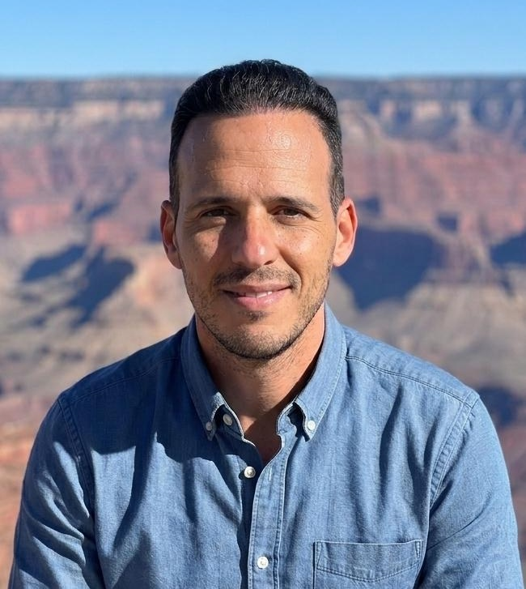
My research focuses on feature selection and dataset hardness, with the goal of understanding when datasets are genuinely hard and how this should shape algorithm selection. I study trade-offs such as runtime, supervision requirements, adoption complexity, and algorithm family, and aim to develop automated pipelines for recommending the most suitable method for a new dataset.
I'm excited by the challenge of transforming a confusing empirical landscape into clear decision rules, and by combining theory, large-scale benchmarking, and automation to make algorithm selection more intelligent.
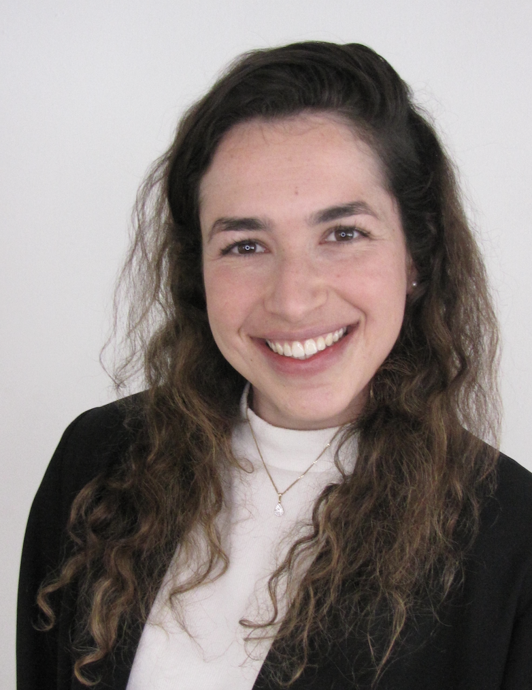
My research develops novel methodologies for data-driven policy design by integrating classical machine learning with advanced AI. I am building a framework focused on three fundamental questions: Who - redefining individual representation through a continuous mapping of meaningful social dimensions; How - using LLM-based synthetic personas to model human behavior; and What-if - applying causal inference to evaluate counterfactual scenarios, enabling decision-makers to test policies before real-world implementation.
I'm excited by bridging advanced data science with real-world challenges. I am driven by applied research, where computational models translate into practical impact, creating innovative solutions that directly shape and improve decision-making processes.
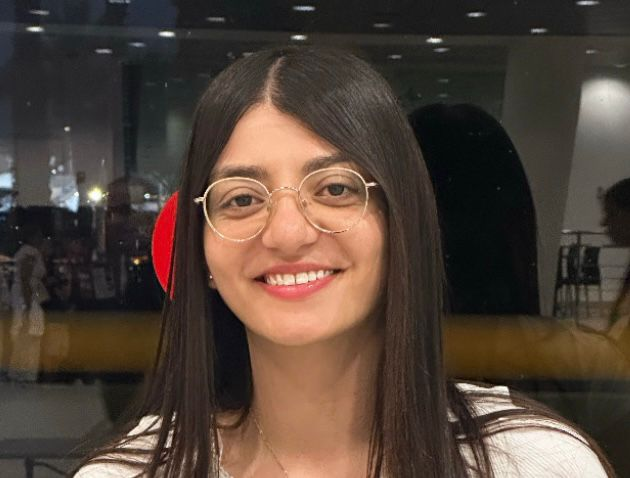
My research focuses on whether vocal features can serve as biomarkers of depression and anxiety among women with chronic endocrine conditions, particularly thyroid dysfunction and diabetes.
I am driven by the potential to advance women's health through the development of accessible and non-invasive tools for early identification of depression and anxiety, and to deepen understanding of the interplay between endocrine processes, mental health, and vocal expression.
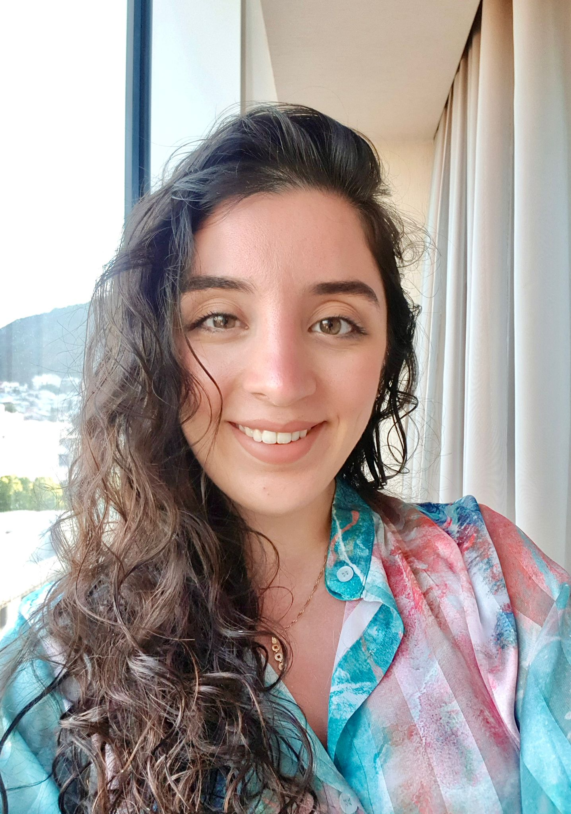
My research focuses on affect-aware NLP, especially sarcasm detection and how emotional signal distributions shift across datasets and domains. I study how models interpret subtle human cues, irony, implicit sentiment, and other affective nuances, and how these signals can be represented and generalized robustly.
I'm excited by the challenge of teaching machines to recognize the richness and ambiguity of human communication.
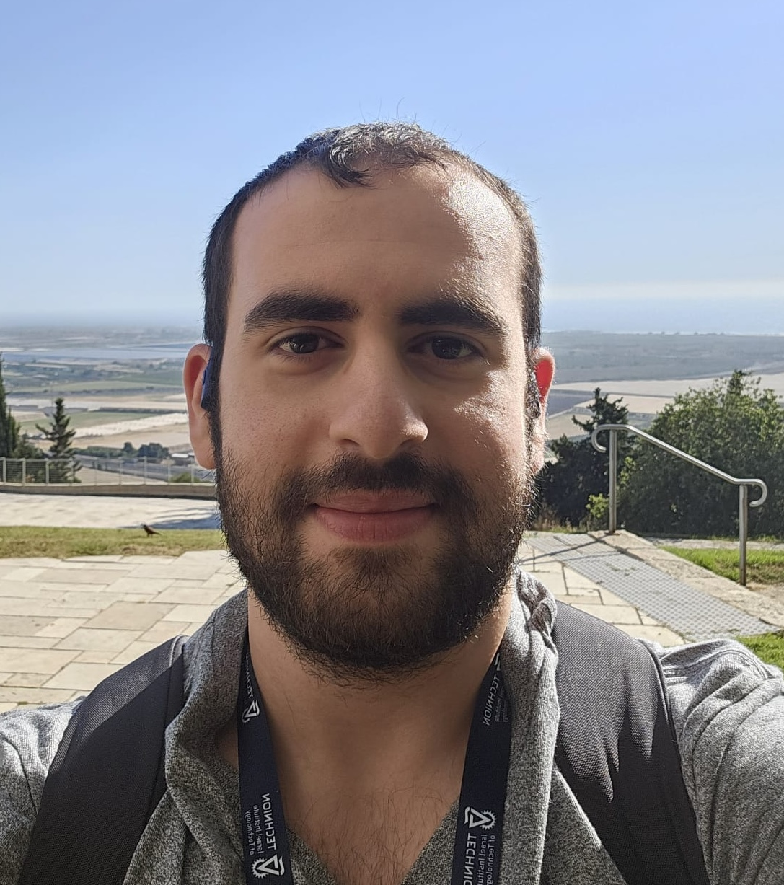
My research focuses on understanding how neural networks solve structured problems through their internal representations. I study whether they encode interpretable concepts aligned with classical algorithmic heuristics, across domains such as SAT, graph optimization, sparse PCA, and extending to CNN-based emotion recognition.
I'm excited by the challenge of making theoretically hard problems tractable in practice, and understanding when learned models can outperform classical algorithms, while using neural networks as empirical tools to uncover latent algorithmic structure.
M.Sc.
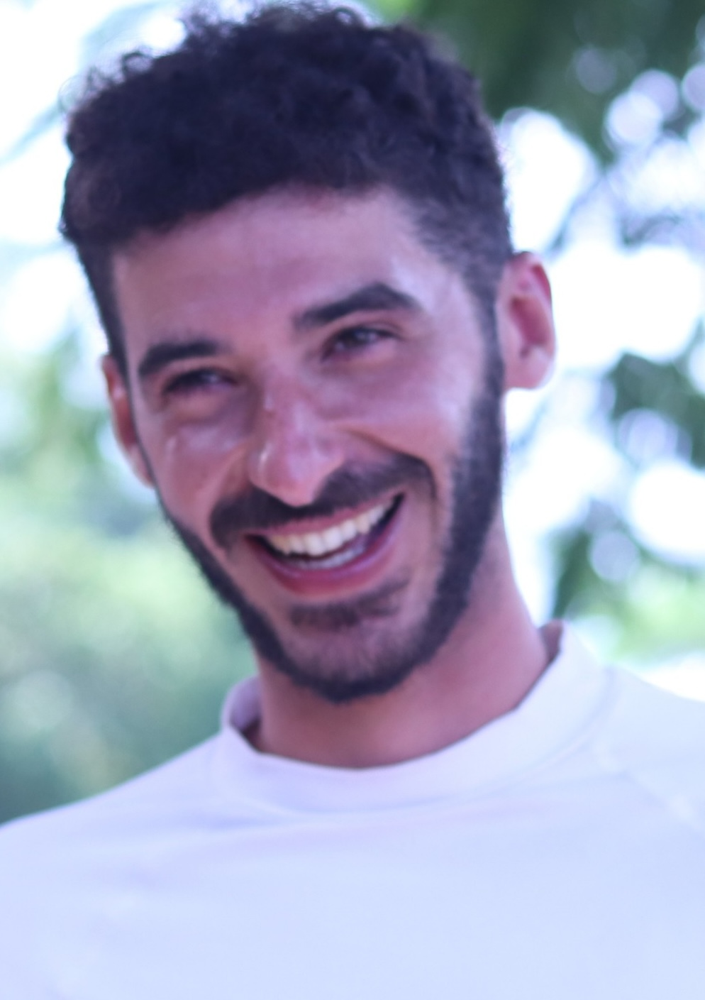
My research focuses on enhancing the cross-domain generalization of surgical gesture recognition using kinematic data from the Da Vinci surgical robot. Our research proposed using the geometric characterization of motion trajectories to extract invariant features, as an alternative to standard raw kinematic data.
I'm excited to apply my core knowledge in mechanics to such critical systems as surgical robots, integrating applied machine learning to solve complex, domain-specific challenges.
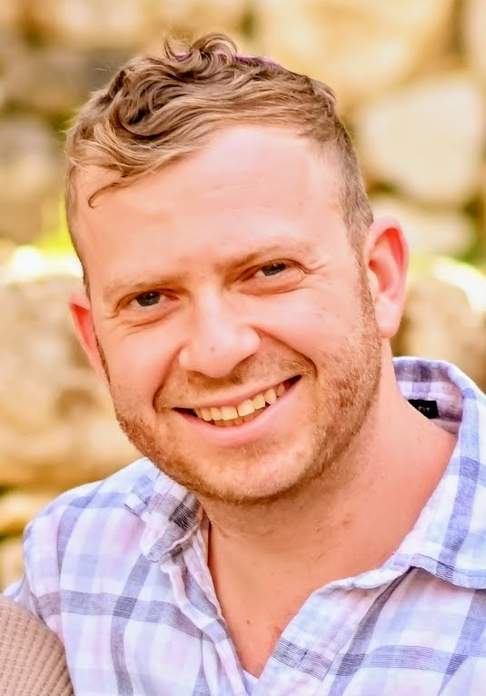
My work explores the application of generative AI to healthcare, with a focus on improving data quality, representation, and model performance, with an emphasis on robustness and generalization.
I'm excited about turning messy, multimodal clinical data into something that can meaningfully improve mental health assessment and real-world patient care.
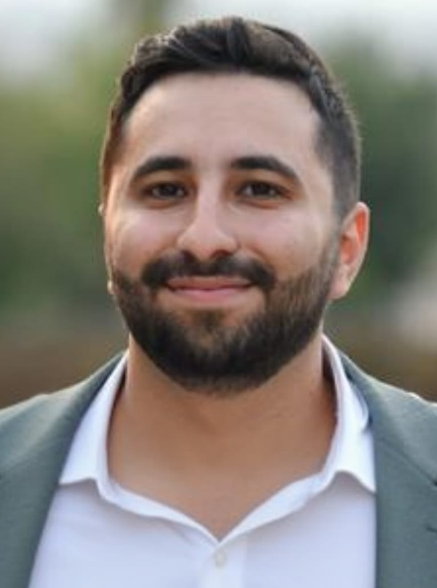
My research focuses on causal inference for irregular clinical time-series, leveraging latent variable modeling and domain-informed DAGs for confounder identification and CATE estimation.
I'm driven by the potential to improve real-world decisions in high-stakes domains like healthcare.
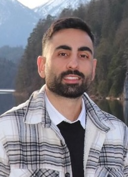
My research focuses on sarcasm detection in natural language, with an emphasis on improving model robustness through synthetic data generation. I investigate how automatically generated sarcastic utterances can augment existing datasets, enrich linguistic diversity, and improve the training of machine learning models for more accurate sarcasm recognition across varied contexts.
I'm excited by the challenge of teaching machines to recognize one of the most subtle and nuanced forms of human communication, and by the potential of synthetic data generation to overcome dataset limitations and unlock better language understanding in sarcasm-aware AI systems.
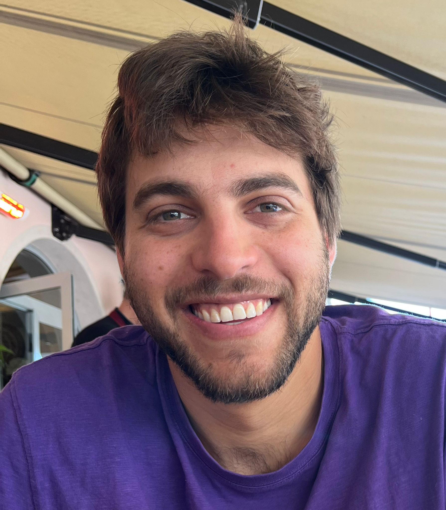
My research focuses on the computational analysis of character relationships in literary texts using advanced algorithms and transformer-based models. I develop methods for modeling complex narrative structures and inter-character dynamics, with an emphasis on capturing subtle patterns of interaction and structural variation across different textual representations.
I am particularly interested in making theoretically complex problems tractable in practice, and in extracting graph-based insights from textual data.
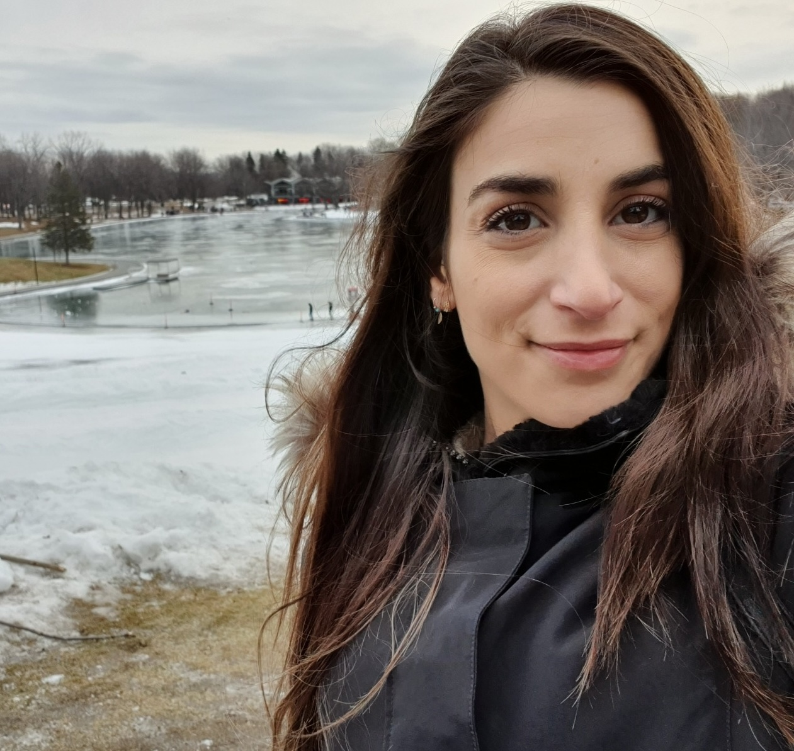
My research focuses on facial expression recognition using a retrieval-augmented generation (RAG) framework. The approach leverages pre-trained vision-language models to enable training-free inference and address data scarcity.
I am excited about leveraging automated tools for facial expression recognition to improve people's well-being, as well as developing a data-efficient emotion recognition framework to make these systems more accessible.
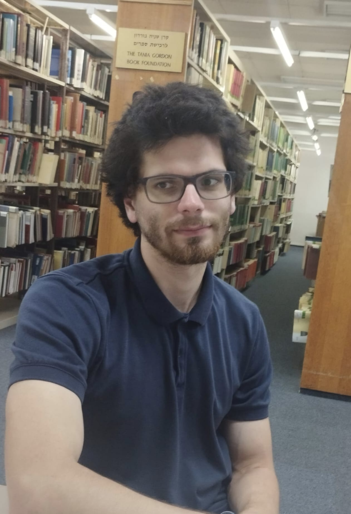
My research focuses on extracting insights from narratives through data analytics and natural language processing methods.
I am interested in applying concepts from computer science to literature in order to gain new analytical insights, especially through modeling and formalizing narrative structures.
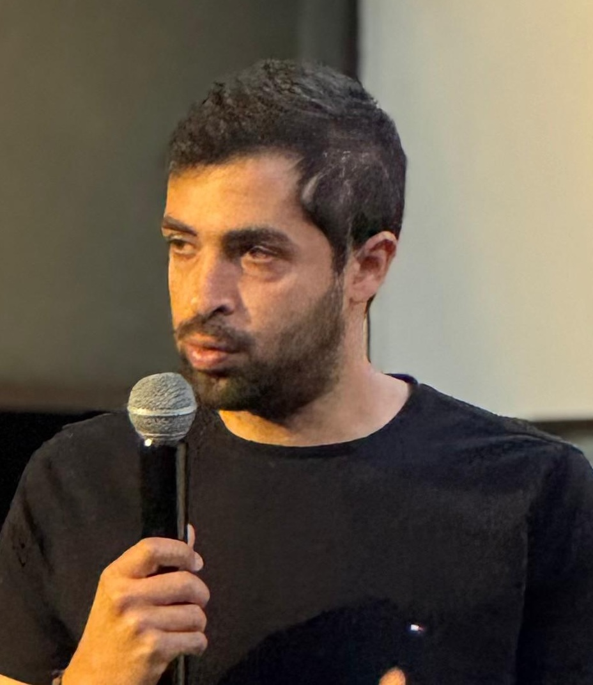
My research focuses on controversial stimuli comprehension in NLP, especially how cross-architecture disagreement between discriminative models like BERT and generative models like LLaMA exposes latent failure modes under distribution shift. I study how these controversial samples can be quantified and integrated into active learning and pseudo-labeling pipelines for hate speech classification, and how they can be leveraged to make domain adaptation more data-efficient and robust across multiple benchmarks.
I'm driven by the challenge of exposing the latent failure modes of modern NLP models through controversial stimuli, and by the potential of turning cross-architecture disagreement into a usable signal for building robust, generalizable hate speech detection systems.
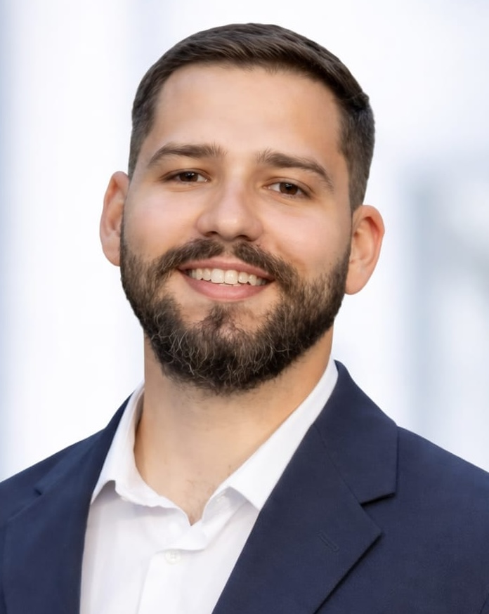
My research focuses on recognition and classification of hate-speech through the fine-tuning of large language models. The central aspect of this work is to understand whether a model fine-tuned on one specific category can generalize effectively to others.
I'm excited by the challenge of contributing to the development of more robust, adaptable, and fair hate-speech detection systems.
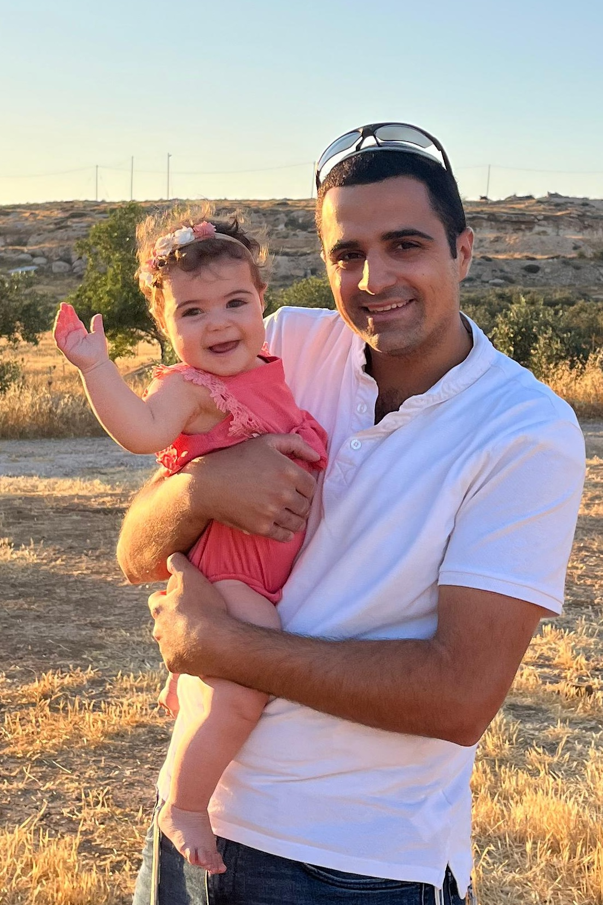
My research focuses on detecting depression from speech using machine learning, generative AI, and multi-modal approaches. I develop methods that leverage physiological acoustic signals and synthetic data generation to improve the robustness and reliability of AI-based mental health assessment systems.
I'm excited by the potential to make mental health assessment more accessible and objective, and by the challenge of building reliable AI systems in real-world, data-limited clinical settings using advanced generative and multi-modal models.
Alumni
Prospective students: please email with your background and interests. Alumni and completed degrees are listed in the CV.